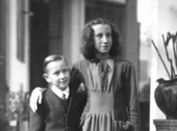
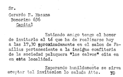
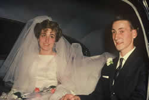

Gerardo Masana: Su vida
La infancia
 Gerardo Héctor Masana nació en 1937 en Banfield, provincia
de Buenos Aires.
Gerardo Héctor Masana nació en 1937 en Banfield, provincia
de Buenos Aires.
Durante su infancia abundaban los juguetes. “Teníamos unos bloques de madera con pórticos y columnas con los que armábamos edificios”, comenta su hermana Nuri. “También teníamos un Meccano, con el cual Gerardo iba armando cosas cada vez más complicadas, a medida que Papá le iba comprando más piezas. Se pasaba horas con eso”.
El recuerdo más lejano que Nuri tiene de su hermano en relación con la música se remonta a cuando Gerardo tenía cuatro o cinco años. En el patio de la casa contigua a la que ellos vivían, se reunía una agrupación de boy scouts. Un día ensayaron un desfile, en el cual avanzaban tocando un redoblante y otros instrumentos. Gerardo los escuchó, agarró su tambor de juguete y comenzó a marchar al mismo ritmo por el patio de su casa. “A esa edad ya manifestaba cierto sentido rítmico y musical”, dice Nuri.
 La educación musical formal de Gerardo comenzó a los ocho
años, cuando fue a estudiar piano con una profesora que vivía
a una cuadra de su casa. Dejó en menos de un año. Igualmente
el piano le siguió interesando y cada tanto se sentaba a tocar algo.
La educación musical formal de Gerardo comenzó a los ocho
años, cuando fue a estudiar piano con una profesora que vivía
a una cuadra de su casa. Dejó en menos de un año. Igualmente
el piano le siguió interesando y cada tanto se sentaba a tocar algo.
A los 11 años le pidió a su madre, que era profesora de piano, que le enseñara. Ella le enseño durante un tiempo y le dio todos los libros que tenía. Gerardo siguió estudiando composición y armonía solo, por su cuenta.
“Un dia le preguntamos de quién era una pieza que estaba tocando. Nos dijo que la había compuesto él. Tenía 15 años”, recuerda Nuri
Durante su adolescencia, Gerardo “leía mucho y de todo”, según Nuri.
Más allá de la literatura, los hermanos fueron fanáticos cinéfilos. “Durante 1950 y 1951 no entraban en la Argentina peliculas nuevas por cuestiones políticas. Los cines reponían películas de archivo. Mamá y papá insistían en que aprovecháramos para ver las grandes obras francesas e italianas. Ibamos al menos tres veces por semana, desde las siete de la tarde hasta las doce de la noche, y veiamos tres peliculas”, cuenta Nuri.
En la casa de los Masana se escuchaba música permanentemente. “Papá tenía muchos discos, y siempre compraba más”, dice Nuri. Abundaban grabaciones de Bach, Beethoven, Mozart y grupos de jazz.
Gerardo retomaría sus estudios formales a fines de los años cincuenta, tras ingresar al coro de la Facultad de Ingeniería de la Universidad de Buenos. Allí tomó clases con el director del coro y compositor Virtú Maragno.
Los años del colegio secundario
En 1950 Gerardo ingresó al primer año del colegio nacional Juan José de Urquiza, en el barrio porteño de Flores. Uno de sus mejores compañeros de esa época fue Jorge Honda, un descendiente de japoneses con el que trabó una larga amistad.
Gerardo era un buen alumno, según Honda. Sin embargo, estudiaba poco, porque estaba convencido de que el secreto no pasaba por estudiar mucho sino por comprender la escencia de lo que los profesores explicaban. Aplicando ese método, hicieron el colegio secundario sin problemas. Gerardo nunca se llevó materias a examen, cree Honda.
La universidad
En 1954 Gerardo terminó el colegio secundario. Al año siguiente se inscribió en la carrera de Arquitectura, que por aquella época se dictaba en el actual edificio histórico colonial conocido como “La manzana de las Luces”, en el centro de Buenos Aires.
Jorge Honda, su compañero del secundario, hizo la carrera con él.
Por aquellos años la vocación de luthier de Gerardo ya se empezaba a perfilar. “Un día hice un viaje al norte argentino y en Humahuaca conseguí una auténtica quena coya. Se la mostré a Gerardo. Le interesó y pronto comenzó a buscar la manera de construir otra igual. Con cartón parafinado fabricó un instrumento que sonaba mejor que la quena original”, recuerda Honda.
Los estudios de arquitectura tuvieron una fuerte influencia sobre Gerardo. Después de todo, los principios básicos que intervienen en la construcción de un edificio, un instrumento o una canción no difieren demasiado.
“Eso lo ayudó muchísimo en su carrera musical”, dice Honda. “Tuvo una formación que fue mucho más allá del mero aprendizaje de música. El era un creador, un constructor, que encaraba su actividad artística de una manera casi arquitectónica. Gerardo construía con su inspiración, su imaginación y sus manos.”
La forma en que se relacionaba con sus compañeros ya evidenciaba los rasgos que años más tarde lo caracterizarían en Les Luthiers. Honda afirma que nunca buscaba imponer su pensamiento ni sus ideas a los demás. “Era un hombre que crecía por dentro desde lo intelectual y dejaba que la gente se acercara y lo fuera descubriendo. En cierto sentido tuvo características de líder, pero era un liderazgo que construia a medida que los demás reconocían sus ideas y sus valores. No era un líder convencional.”
 En cuanto a las preferencias de Gerardo en materia artística, Honda
recuerda que le gustaba mucho Gaudí y que siempre se interesó por
todo lo vinculado con la cultura española en general y catalana
en particular.
En cuanto a las preferencias de Gerardo en materia artística, Honda
recuerda que le gustaba mucho Gaudí y que siempre se interesó por
todo lo vinculado con la cultura española en general y catalana
en particular.
Tanto Gerardo como Jorge Honda, eran admiradores de Picasso. A Gerardo también la gustaban mucho Joan Miro y Kandinsky. Y como arquitecto, tenía devoción por la obra de Gaudí y contaba con orgullo que su abuelo lo había conocido personalmente y había trabajado en la herrería que hizo los balcones de La Pedrera.
Gerardo no tuvo durante su vida universitaria ninguna actividad ni participación política. “No era insensible a la realidad social, sino que buscaba encontrarle respuestas desde lo profesional. Cuando llegó el momento de elegir los talleres de la carrera, la mayoría optaba por cursos donde se enseñaba a proyectar quintas o casas lujosas. Nosotros elegimos talleres donde aprender a diseñar barrios obreros y casas funcionales para familias numerosas. También buscábamos que la arquitectura no agrediera la naturaleza. Nos oponíamos a la idea de poner hormigón en las plazas públicas, una idea que luego caracterizaría a algunos gobiernos militares.”
Eso los llevó a cursar el taller dictado por Odilia Edith Suárez, quien hoy sigue siendo una de las más importantes urbanistas argentinas.
Masana y Honda se recibieron en 1963.
Ya desde comienzos de 1960, antes de recibirse, Gerardo complementaba el estudio con su trabajo como ayudantede arquitecto en la Cooperativa Familiar de la Vivienda, una entidad que tenía sus oficinas en Paraguay y Riobamba.
Allí, cada tanto se cruzaba con el gerente de la cooperativa, Bernardo Tomás, un hijo de inmigrantes mallorquines de 46 años. Tomás no trabajaba directamente con Gerardo pero tenía un buen concepto de él, en parte por su aspecto de persona seria y trabajadora, y en parte porque los pocos comentarios que había escuchado sobre él lo describían como callado, compenetrado con su trabajo y eficiente. Tomás no sabía por aquel entonces que Gerardo estaba interesado en una de sus hijas. Mucho menos iba a imaginar que se casaría con ella.
Magdalena –más conocida como Malena- tenía 18 años y era la mayor de tres hermanas. Trabajaba en la cooperativa como secretaria de un contador y su oficina estaba un piso más abajo que la de Gerardo.
La atracción era mutua. A Malena, ese joven algo mayor que ella –él tenía 23 años- le resultaba interesante. Dado que en la cooperativa no había mandaderos, tanto Malena como Gerardo solían salir de sus oficinas para ir al correo, hacer copias de planos u otros trámites, y aprovechaban esas salidas para visitarse mutuamente. Finalmente, Gerardo la invitó a salir, y allí comenzó el romance.
El casamiento
El 5 de enero de 1963, en la Parroquia del Tránsito de la Santísima Virgen (Cangallo 3329, BuenosAires), tuvo lugar el casamiento, a través de una ceremonia sencilla, magnificada por la presencia del coro de la Facultad de Ingeniería, que cantó un par de canciones. La fiesta se realizó en la casa de los padres de Gerardo, ubicada sobre la calle Bonorino, en el barrio de Flores.
Malena recuerda que en un principio, la idea de celebrar un casamiento religioso no había causado un gran entusiasmo en Gerardo, aunque finalmente accedió: “Ocurrió entonces que Gerardo no estaba bautizado. El cura le dio unas lecciones de catecismo y unas oraciones para que las estudie y las recite en el momento del bautismo. Cuando volvimos a casa, Gerardo guardo los textos y no los volvió a tocar", recuerda Malena.
“El día del bautismo, en mi doble carácter de madrina y futura esposa, me sentía aterrada; tenía miedo de pasar un papelón. Sin embargo, ante mi sorpresa y la del cura, Gerardo recitó perfectamente el Padre Nuestro y el Ave María...en latín. Me acordé entonces de que el Pater Noster de Igor Stravinsky formaba parte del repertorio del coro de la facultad de Ingeniería, donde ámbos cantábamos".
 Para
Malena, Gerardo fue más que su esposo y el padre de sus hijos.
Fue la persona que le abrió las puertas al mundo del arte. En ese
sentido, su legado fue decisivo. Con el tiempo, Malena se destacó en
el terreno de la fotografía. Participó en distintas exposiciones
y ganó varios premios. Hoy en día sigue realizando excursiones
fotográficas por distintos lugares de la Argentina y del exterior.
Varios años después de la muerte de Gerardo se graduó como
licenciada en historia del arte y ciencias del teatro e inició una
larga carrera como docente universitaria en la universidad argentina John
F. Kennedy. Nunca dio cursos para graduados o para eruditos. Su objetivo
fue, y sigue siendo, ayudar a que los jóvenes descubran cómo
la contemplación y la creación artística puede enriquecer
sus vidas. Gerardo y Malena tuvieron dos hijos.
El primero en nacer fue Sebastián (1966). Le siguió Ana Magdalena
(1969).
Para
Malena, Gerardo fue más que su esposo y el padre de sus hijos.
Fue la persona que le abrió las puertas al mundo del arte. En ese
sentido, su legado fue decisivo. Con el tiempo, Malena se destacó en
el terreno de la fotografía. Participó en distintas exposiciones
y ganó varios premios. Hoy en día sigue realizando excursiones
fotográficas por distintos lugares de la Argentina y del exterior.
Varios años después de la muerte de Gerardo se graduó como
licenciada en historia del arte y ciencias del teatro e inició una
larga carrera como docente universitaria en la universidad argentina John
F. Kennedy. Nunca dio cursos para graduados o para eruditos. Su objetivo
fue, y sigue siendo, ayudar a que los jóvenes descubran cómo
la contemplación y la creación artística puede enriquecer
sus vidas. Gerardo y Malena tuvieron dos hijos.
El primero en nacer fue Sebastián (1966). Le siguió Ana Magdalena
(1969).

© Copyright 2004, Sebastián Masana.